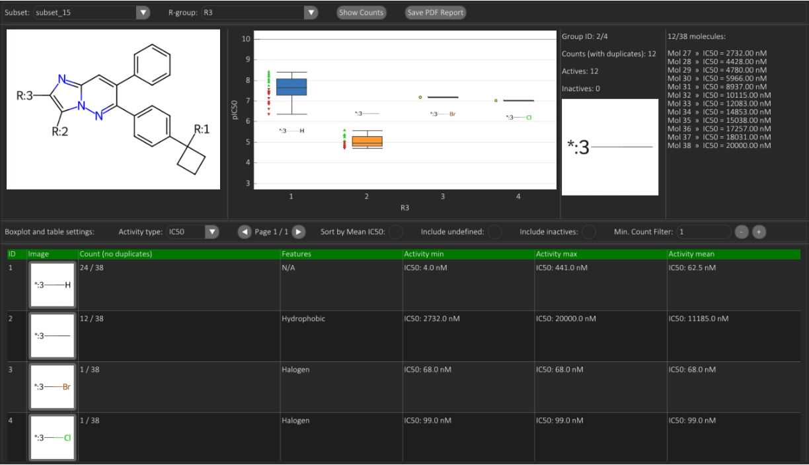
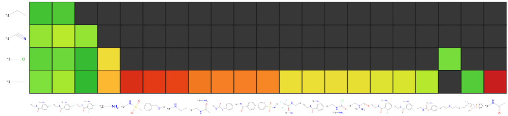

R-Groups Analysis
The R-Groups Analysis tab allows to explore the distribution of R-groups in a specific position across subsets, to correlate the presence of specific substituents with bioactivity trends, and to identify potential SAR patterns associated with one or two specific R-group positions.
R-Group Counts
The R-Group Counts sub-tab reports substituent frequency at a given R-site within a selected subset and correlates the associated molecular bioactivity using two analytical tools: SAR-encoded activity boxplots, describing the statistical distribution of activity values per substituent, and the R-Counts Table, summarising substituent prevalence and filtering parameters.
A control panel at the top allows selection of the Subset and R-group to analyze, while a second panel below the boxplot provides options to customise the boxplot and the table. Depending on the activity type selected by the user, the activity values may be internally converted to logarithmic potency scales (e.g., pIC50). Two checkboxes allow inclusion of molecules with undefined activity relationships (<, ≤, ≥, >) and inactive entries, optionally assigning a placeholder value of 0 to non-labelled actives for enrichment calculations. A Minimum Count Filter excludes substituents below the user-defined occurrence threshold to prevent statistically uninformative boxplot categories.
Within the graphical encoding, individual molecules are mapped to: green upward arrows (activity above the arithmetic mean), red downward arrows (activity below the mean), or yellow circles (activity equal to the mean). By default, both the table and boxplot elements are rank-ordered by descending substituent frequency (number of molecules containing each substituent). Activating Sort by Mean Activity re-orders boxes and table rows according to ascending mean activity for IC50-like readouts (otherwise descending for non-IC50 scales).
Left-clicking a box or a substituent image cell updates the Properties Panel with enrichment statistics, including:
- active vs inactive substituent prevalence,
- the list of molecules bearing that substituent, and
- their corresponding activity values.
Example Analysis

In the reference example, Subset 15 and the R3 position are selected. At this R-site, the subset contains exactly four substituent variants (H, CH₃, Br, Cl), as listed in the table. The image positioned at the upper-left corresponds to the common core for Subset 15. The adjacent boxplot displays four boxes, each representing the activity distribution of molecules bearing the respective substituent at R3. Br and Cl appear in boxes 3-4, but would be excluded under a Min Count Filter ≥ 2 (default value).
In the example, box 2 (CH₃) is selected, reporting the 12 molecules from Subset 15 that contain -CH₃ at R3, alongside their individual IC50 values.
This representation yields dual SAR insights: (1) substituent expression bias within a subset, and (2) the directional dependency between substituent identity and bioactivity. In the example:
- 24 molecules carry H at R3, all showing pIC50 > 6,
- 12 molecules carry CH₃ at R3, all showing pIC50 < 6,
- 1 molecule carries Br at R3, showing pIC50 ≈ 7,
- 1 molecule carries Cl at R3, showing pIC50 ≈ 7.
Overall, this analysis does not prove causation: the activity shift might derive from other covarying structural features or sampling bias introduced during substructure aggregation, but the pattern is compatible with a local substituent-driven SAR cliff hypothesis at R3.
R-Group Pair Matrix
The R-Group Pair Matrix sub-tab is a matrix-based view designed to inspect activity trends associated with specific pairs of substituents occurring at two selected R-group positions. The matrix axes represent substituents observed at the chosen positions, while each cell summarizes the activity of molecules featuring that specific substituent combination.
The user selects:
- Subset to analyse.
- Activity type (IC50-like endpoints are automatically converted to a logarithmic scale, e.g., pIC50).
- Two R-group positions to be displayed on the X and Y axes.
For each selected R position, all substituents present in the subset are listed along the corresponding axis. Cell colours follow the scale reported by the colour bar on the left and encode the mean activity (for the selected endpoint) of molecules matching that substituent pair.
Hovering a cell displays a tooltip reporting: mean activity, activity range, the number of molecules presenting the pair (Total counts), the number of molecules annotated with a value for the selected activity (Actives), and the number without an annotation (N/A).
Black cells indicate substituent pairs not observed in the subset (tooltip: No Occurrences). Grey cells indicate observed pairs occurring exclusively in molecules without activity annotations for the selected endpoint (tooltip: N/A Only, with Total counts reported).
